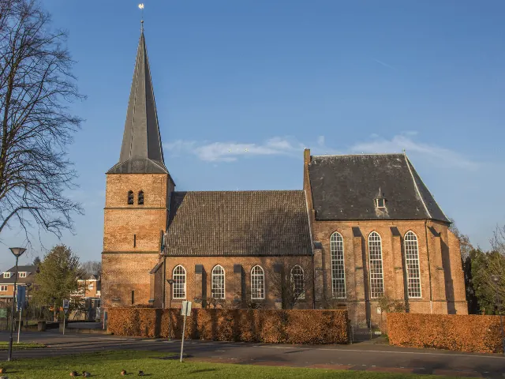
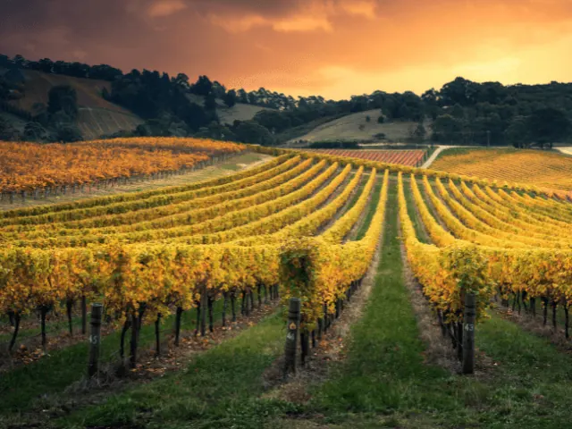
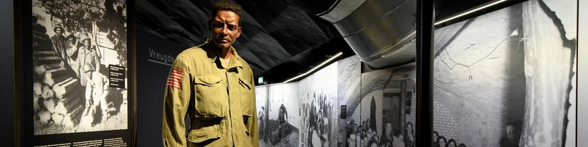
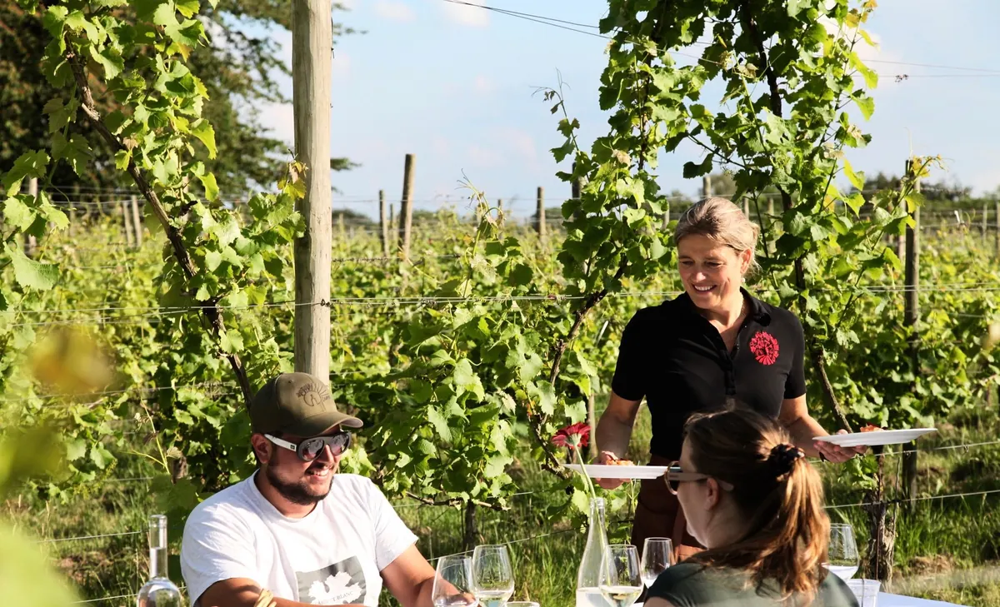

Bestemming bij Nijmegen
Groesbeek
Waar geschiedenis, natuur en wijn samenkomen



Groesbeek, een pittoresk dorp in Gelderland, is een verborgen parel met rijke geschiedenis en natuurlijke schoonheid. Het herbergt het Vrijheidsmuseum, dat levendige verhalen vertelt over de Tweede Wereldoorlog. Daarnaast is het bekend als de ‘wijnhoofdstad van Nederland’ met zijn charmante wijngaarden. Voor natuurliefhebbers biedt het Zevenheuvelenpad adembenemende uitzichten op het glooiende landschap. Tot slot, een bezoek aan de indrukwekkende Canadese Begraafplaats biedt een moment van bezinning. Kortom, Groesbeek is een unieke bestemming vol ontdekkingen.


Het Vrijheidsmuseum in Groesbeek
In Groesbeek staat het indrukwekkende Vrijheidsmuseum, een plek gewijd aan de historische gebeurtenissen van de Tweede Wereldoorlog. Het museum brengt het verhaal van oorlog en bevrijding tot leven door middel van interactieve tentoonstellingen en persoonlijke getuigenissen. Bezoekers worden uitgenodigd om de veerkracht van de menselijke geest te verkennen en de kostbare waarde van vrijheid te waarderen.
De Groesbeekse Wijngaarden
Groesbeek draagt met trots de titel ‘wijnhoofdstad van Nederland’, dankzij de schilderachtige Groesbeekse Wijngaarden. Deze wijngaarden produceren een verscheidenheid aan bekroonde wijnen, geliefd door zowel kenners als beginners. Bezoekers kunnen genieten van rondleidingen, wijnproeverijen en evenementen, terwijl ze het prachtige landschap bewonderen. De wijnroutes door de wijngaarden bieden een unieke kans om te genieten van de lokale cultuur en natuur.
De Groesbeekse Wijngaarden vormen een onmisbare stop voor wijnliefhebbers.


Mookerheide
Op slechts een korte rit van tien minuten van Nijmegen ligt de betoverende Mookerheide. Dit natuurreservaat, dat zich kenmerkt door uitgestrekte heidevelden en prachtige bossen, is doordrenkt van een rijke historie. Het is de perfecte plek om te voet te verkennen en te genieten van de serene rust. Een schitterend gebied dat absoluut een bezoek verdient.
Evenementen Groesbeek
Bekijk hier de evenementen die gehouden worden in Groesbeek
Lees ook

Ontspannen bij een B&B in Groesbeek? Hier kan je dat doen!
Groesbeek is een dorp gelegen in Berg en dal, en staat bekend om zijn schilderachtige landschap. Het gebied omvat heuvels en dalen die gevormd zijn door…

Museums in Nijmegen, wat ga jij ontdekken?
Nijmegen is met een tiental museums niet meteen een museumstad bij uitstek te noemen, maar wie van historie en cultuur houdt, kan er zeker zijn hart…

3x een leuke Bed and Breakfast in Wijchen
De meest opvallende oude bezienswaardigheid in Wijchen is het centraal gelegen Kasteel van Wijchen, dat voor het eerst genoemd wordt in archiefstukken uit…